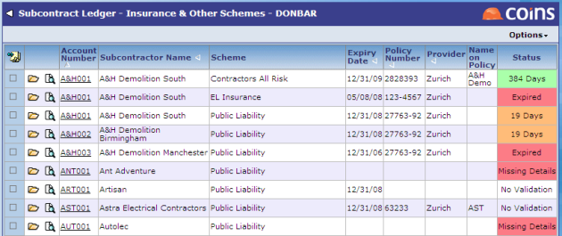

Managing
Using you can maintain all the checks for each subcontractor and subcontract, without needing to go to each record separately.

The Status column shows at a glance the status of each :
- Red means the has expired or some required details have not been recorded.
- Amber means the is due to expire within a set number of days.
- Green shows the number of days before the expires.
Various filters are available; for example, you can choose to show only with missing details or only that are due to expire within the next 30 days. A separate filter allows you to show:
- All Details ? all information recorded in the system.
- Subcontractor Only ? only information recorded at subcontractor level.
- Subcontract Specific ? information recorded at the subcontract level, unless it is identical to that held at the subcontractor level.
You can add and update attachments against .
Two other workbenches, - Select and - By , are designed to allow you to maintain checks for subcontractors assigned to subcontracts of a particular .
- Consolidated by Subcontractor shows information held on subcontract orders as well as that held on the subcontractor record. This workbench can be used for mail merges to subcontractors as it consolidates all warnings onto a single line in the browse.
To update a subcontractor's policy details:
- Go to .
- Click
 for the policy record you want to update.
for the policy record you want to update.
- Enter the updated policy details.
- If you do not want to check the policy at all (for this subcontractor), un- the Validate box.
- Click
 .
.
If you want to update all the policies for a subcontractor, click the link in the Account Number field to go to the Insurances tab on the subcontractor record.